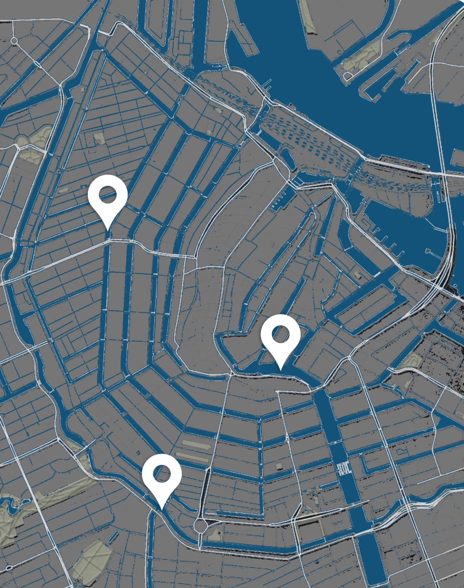
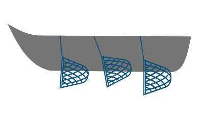

Statistieken
De clean up opbrengsten van deze week.
aantal opgehaalde vuilniszakken met plastic
aantal boten die plastic hebben opgehaald

De plekken waar de whale boten deze week plastic op hebben gehaald.
In het jaar 2022:
25.834 plastic flessen opgevist
14.417 mensen zijn gaan vissen
3.785 dieren gered van plastic

652 plastic visevents